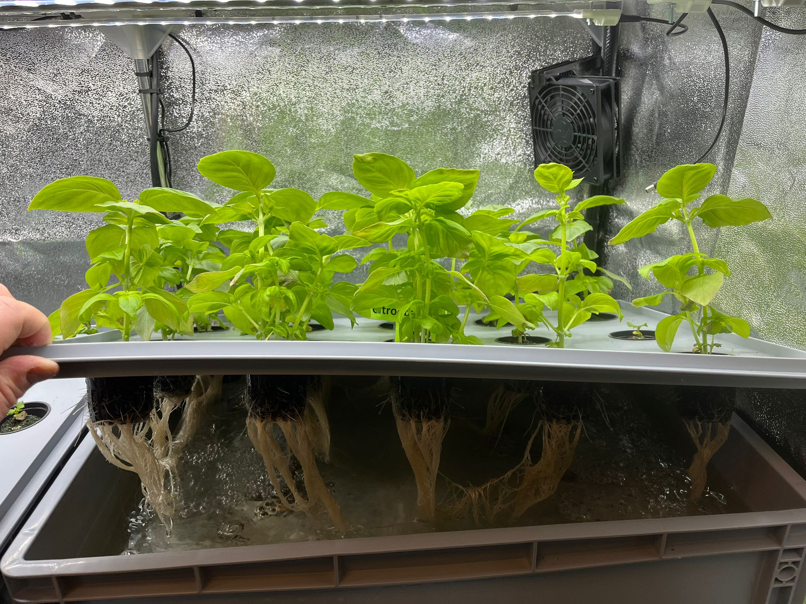

Upptäck Vattenkultur
Vattenkultur, även känd som hydroponisk odling, är en modern odlingsteknik där växter odlas utan matjord. Istället används näringsrikt vatten och olika typer av växtmedium.
Lär dig merGrunderna i Vattenkultur
Vad är Vattenkultur?
Vattenkultur är en odlingsteknik där växter får sina näringsbehov tillgodosedda genom en näringslösning istället för traditionell jord.
Fördelar
Kraftigare tillväxt, bättre kontroll över näringstillförsel och möjlighet till odling året runt är några av de många fördelarna.
Tekniker
Det finns flera olika tekniker som NFT, DWC och aeroponik, var och en med sina unika fördelar för olika typer av odling.
Varför Vattenkultur?
Vattenkultur erbjuder många fördelar jämfört med traditionell odling:
- Upp till 90% mindre vattenförbrukning
- Snabbare tillväxt och högre avkastning
- Möjlighet till odling året runt
- Optimal näringstillförsel
Vattenkultur i Bilder
